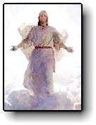
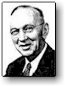

|
The Past Lives of Jesus |
|
According to Edgar Cayce |
 
The system of metaphysical thought which emerges from the Cayce material can be
described as a"Christianized"
version of the mystery religions of
ancient Egypt, Chaldea, Persia, India, and Greece. It fits Christ into the
mystical tradition of one God for all people, and places Christ in his proper
place, at the apex of the philosophical structure - the capstone of the pyramid.
Cayce was a
fundamentalist Christian who was
raised in strict nineteenth century Bible tradition. When he discovered that his
subconscious information declared the ancient mystic religions to be true and
acclaimed Jesus as their crowning glory, he suffered the greatest mental and
emotional shock of his life. Cayce had only a seventh grade education and
consciously knew nothing of what he said while in a deep trance-like state. He
was only versed in the Bible and had no high school or college background of any
kind. Up until his revelations, Cayce had never heard of the mystery religions.
Yet the Cayce material agrees with everything about them that is known to be
authentic. He spoke at length on Christian
Gnosticism well before the
Gnostic writings were discovered after his death. Cayce affirmed that Christian
Gnosticism is the type of Christianity that was taught by Jesus. Much of the
information from Cayce has solved some of the greatest mysteries of humanity,
some of which were later validated
after the discoveries of the Dead Sea Scrollsand the early Christian
writings discovered in Egypt.
Cayce's
descriptions of the Essenes of Mount Carmel reveal the religious sect to be an
ideal for others who would prepare the way for the Second Coming of Christ.
Cayce's revelations of Jesus' so-called "lost years" as a youth studying in
Egypt, Persia, and India suggest an important compatibility
of between the eastern and western religions. Cayce's Christology also makes
the Christ soul not only an ideal and pattern toward which everyone should
aspire, but a living presence to guide people toward "at-one-ment"
with God - the perfect divine-human unity which Jesus attained.
According to the Cayce material, Jesus and Adam were different incarnations of
the same Christ soul. Eve and the Virgin Mary (Jesus' twin soul) were also
different incarnations of the same soul. This karmic connection between Adam and
Jesus explains why Jesus was able to pay the "karmic debt" by atoning for the
"sin of Adam." This Adam-Jesus connection can be seen in the following excerpt
from the Cayce readings:
| Question: "When did the knowledge come to Jesus that he was to be the Savior of the world?" |
| Cayce: "When he fell in Eden." [2067-7] |
According to Cayce, many other personalities from the Old Testament and history were also incarnations of Jesus. The Cayce material describes the entire Christian Bible as part of the story of Jesus' long struggle to attain "Christhood" and provide humanity a pattern to do the same. Here is a list of the incarnations of Jesus according to Cayce:
|
||||||||||||||||||||||||
|
According to Cayce, the "fall
of man" was an event recorded symbolically in Genesis where souls from
heaven first descended to the Earth plane to began incarnating as humans. The
first wave of souls to incarnate (known in the Bible as "the sons of men")
became entrapped in the Earth plane accidentally, through their misuse of free
will. These events gave rise to legends of the "fall of the angels" and to
mythical beasts of the kind described in J.R.R. Tolkien's "The Lord of the
Rings."
The second wave of incarnations (known in the Bible as "the sons of God")
consisted of those souls led by Amilius - the Christ soul - who voluntarily
became entrapped in order to assist the first wave of trapped souls. They
accomplished this by steering the process of physical evolution in a way that
created more appropriate physical forms for these souls. Cayce places Amilius on Atlantis,
but says that he did not physically incarnate until the human physical form had
been created, at which time the Genesis accounts of Adam and Eve begin. Cayce
sometimes used the word "Adam" to also refer to the entire group of souls which
had accompanied the Christ soul into incarnating into the Earth plane and who
incarnated as the five races of humanity on five separate continents.
Adam (as the Christ soul) joined his twin soul Eve in allowing himself to be
seduced by materiality himself. This is symbolized by his acceptance of "the
forbidden fruit." The other sons of God followed his lead and incarnated, and as
a result were moved to express their materiality by interbreeding with the
"daughters of men" (Genesis
6:1-2) who were the homo sapiens that evolved from ape-men according to
Darwin's theory of evolution. According to the Cayce material and Christian
Gnosticism, their banishment from the Garden of Eden was actually a great
blessing because death and reincarnation are designed to draw our attention away
from materiality and the flesh, and toward our true spiritual nature.
Cayce also identified Melchizedek as
an incarnation of the Jesus-entity. Melchizedek was the "king of Salem" and
"priest of the most high God" who shares bread and wine with Abraham in Genesis
14:18-20. Melchizedek is also mentioned both in the Dead
Sea Scrolls(I I Q Melch) and the Nag
Hammadi codices (NEC IX 1), where
he appears as a cosmic angelic figure similar to the risen Christ. Hebrews 5:10
refers to Jesus "a high priest after the order of Melchizedek." According to
Cayce, Melchizedek wrote the Book of Job which contains many unusual verses that
Cayce would often quote from while in trance. For example, Cayce stated, "For,
as the sons of God came together to reason, as recorded by Job, "WHO recorded
same? The Son of Man! Melchizedek wrote Job!"
Cayce also identified the Biblical personality named Enoch to
be a Jesus-entity incarnate. Enoch is described in several
pseudepigraphal writings as well
as some Kabbalistic
writings. The modern Bible has a brief mention of Enoch:
| "And Enoch walked with God: and he was not, for God took him." (Gen. 5:18-24) |
The
Books of Enoch describe the fall of the angels into materiality - the beginning
of the incarnation of souls from heaven. It also describes Enoch's several
heavenly journeys where it is revealed to him the future up until the time of
the Messiah. Enoch is also taught traditional topics as angelology and the
divine throne-chariot. The Ethiopic
Enoch introduces Enoch to a
messianic figure referred to as "the Son of Man." The Hebrew scripture known as
"Apocalypse of Enoch" describes Enoch transfigured into an angel named Metatron.
In the New Testament, Enoch is mentioned in Hebrews
11:5 and Jude
14-15, with the latter passage apparently quoting from the pseudepigaphal
Enochian literature. The fact that the Bible itself quotes from the Book of
Enoch is evidence that Cayce was correct about the book being a valid source for
higher spiritual knowledge.
Cayce also identified the Biblical personality named Joseph (son
of Jacob) as an incarnation of the Jesus-entity soul. Accordingly, Joseph's
escape from the pit was not only a literal event, but a symbolic anticipation of
Jesus' resurrection. Cayce's identification of Joshua, the notorious genocidal
leader of Israel in the Old Testament, as an incarnation of the Jesus-entity is
a little more difficult to believe. But Cayce viewed Joshua's claim to fame as
being the scribe for Moses who "psychically" dictated much of what is attributed
to Moses. This interesting bit of information explains how "Moses" wrote about
his own death. Another Biblical personality named by Cayce to be a Jesus-entity
incarnate is the high priest named Jeshua who helped organize the return from
exile and the rebuilding of the temple (see Ezra and Nehemiah). According to
Cayce, this Jeshua is the one who compiled and translated the books of the
Bible. In essence, Cayce identifies all these Biblical personalities to be
psychic revelators.
An interesting fact is that "Joshua", "Jeshua", and "Jesus" are really the same
name. The name "Jesus" is a Latin version of the Aramaic name Jeshua or
"Yeshua." And Yeshua is Hebrew for Joshua or "Yehoshua." Thus, Cayce has
assigned the soul-entity Jesus to be incarnations of the three Biblical
characters having the same name. Cayce also mentions that Jesus was an Essene who
was registered by his Essene school under the name of "Jeshua".
Concerning the so-called "Second Coming" of Christ (which is really not the
second, but many) Cayce sometimes interpreted it to be an internal spiritual and
psychic event within the individual (see Cayce
on the Book of Revelation). On other occasions, Cayce interpreted it to be
an actual return of Jesus Christ in physical form. When Cayce gave his
prophecies about the massive
geological changes predicted to being around 2000 AD, he stated that:
|
"These will begin in those periods from '58 to '98 when these will be proclaimed as the periods when His light will be seen in the clouds" (3976-15). |
This reading from Cayce suggests that Jesus will appear in the sky and return to Earth in bodily form. Cayce stated that Jesus will walk the Earth again:
|
"As given, for a thousand years he will walk and talk with men of every clime. Then in groups, in masses, and then they shall reign of the first resurrection for a thousand years; for this will be when the changes materially come." (364-8) |
Cayce
gave the year of the "entrance of the Messiah into this period -1998." (5748-5)
He also mentions that no one knows the exact day of event because it cannot
occur "until His enemies - and the Earth - are wholly in subjection to His will,
His powers." (57491). So this suggests that Jesus return will not be a future
incarnation in the flesh since Jesus has already transcended the need to
reincarnate.
The Incarnation as Jesus
Two years after Cayce's death in 1945, the Dead
Sea Scrolls were discovered in
Qumran. This remarkable archeological discovery revealed a large amount of
information about a religious sect around the time of Jesus referred to as the
Essenes and affirmed information provided by Cayce. The word "Essene" is never
used in the Dead Sea Scrolls but most scholars accept that the Qumran sect was
either identical or closely related to the Essenes of the classical authors such
as Josephus and
Pliny. According to Cayce, Jesus was an Essene along with Mary and Joseph who
was affiliated with an Essene community based on Mount Carmel which was a
continuation of a "school of the prophets" begun by Elijah, Elisha, Samuel, and
Melchizedek. Cayce described the Essenes as an pious religious community of men
and women whose purpose was to prepare the way for the coming of the Messiah.
Archeology does not reveal the meaning behind the word "Essene" but Cayce
mentioned that it means "expectancy." According to Josephus, the Essenes were
known for divination (foretelling the future) which agrees with Cayce's
descriptions of them spending their time recording experiences of "the
supernatural or out of the ordinary experiences; whether in dreams, visions,
voices, or what not" (1472-1). Cayce also mentioned that the Essenes were
students of astrology, numerology, and reincarnation.
The Dead Sea Scrolls describe the Essenes as an authoritarian, highly
disciplined community that controlled every facet of member's lives. They had to
give all their money and property over to the community after a year's
probation. Their theology stressed a good versus evil duality. It also describes a
conflict between a "Teacher of Righteousness," a "Wicked Priest," and "the
Liar." They separated themselves
from the outside world in an anticipated final war between the sons of light and
the sons of darkness. As for the Jesus connection to the Essenes, scholars
believe the idea of Jesus being an Essene does not fit the personality and
teachings of Jesus despite the many interesting similarities between Jesus and
the Qumran community. For example, scholars believe the Essenes wouldn't have
approved of Jesus' bending of the moral standards such as associating himself
with prostitutes and tax collectors. It is also believed that John the Baptist
was an Essene because of the similarities between himself and the Essene
community.
According to Cayce, Jesus' mother Mary was chosen by the Essenes at the age of
four to begin intensive spiritual training lasting three years in preparation
for the conception of the Messiah. Her election as the mother of the Messiah
occurs during a special ceremony in the temple at Mount Carmel in which an angel
leads her by the hand to the altar. Remarkably, this Cayce reading agrees with
an apocryphal book entitled the Infancy
Gospel of James where Mary is
presented to the Lord at the age of three when her father Joachim "set her on
the third step of the altar, and the Lord God gave grace to her ... and she
received food from the hand of an angel." (325) Cayce and the Infancy Gospel of
James agree that Joseph was chosen to be Mary's husband by lot. They also agree
that Joseph was much older than Mary. Cayce gives their ages at the time of
their marriage as thirty-six and sixteen, respectively. Cayce and the Infancy
Gospel of James agree that Jesus was born in a cave.
Jesus and Eastern Mysticism
According to Cayce, Jesus was sixteen years old when his education about the
ways of the ancient teachers began. First, he traveled to Egypt where, as an
infant, Jesus was taken after his birth by his parents to flee Herod as the
Gospel of Matthew states. After spending time learning in Egypt, Jesus spent
three years in India and finally a year in Persia.
The idea that Jesus had spent his "lost years" wandering Asia did not originate
with Cayce. Its first proponent seems to have been the Russian war correspondent Nicholas
Notovitch (1858 - 1916), who
described his travels in British India in a book entitled "The Unknown Life of
Jesus Christ" published in 1894. According to his book, Notovitch was told by
the "chief lama" of a monastery that their library contained records of a visit
by Jesus in ancient times. The chief lama finally relented to Notovitch's
requests to examine the records. From two large bound volumes written in
Tibetan, Notovitch translated them through his interpreter as "The Life of Saint
Issa: Best of the Sons of Men."
The text begins by summarizing the exodus of the Jews from Egypt, Israel's lapse
into sin during the prophetic period, and the subsequent Roman occupation. But
God has mercy on one poor couple (Mary and Joseph), whom he rewards by giving
them a son, Issa (which is the Qu'anic name for Jesus). All is well until the
boy turns thirteen and the parents arrange a marriage for him. Issa "... left
the parental house in secret, departed from Jerusalem, and with the merchants
set out towards Sind, with the object of perfecting himself in the divine word
and of studying the laws of the great Buddhas. [IV. 12- 13]
At fourteen, he encountered the "erring worshippers of Jaine" a reference to
Jainism. Then he spent six years studying the Vedas and learned the art of
exorcism and intercessory prayer. Issa rebuked Brahmin priests for upholding the
caste system. Issa also would violate their customs by giving teachings to the
lower castes. He is seen rejecting the authority of the Vedas and Puranas,
denying the Trimurti and the incarnation of Brahma as Vishnu, Shiva, and other
gods. It is written that Issa belittled idolatry and barely escaped India with
his life. In Nepal, he grew proficient in Pali and spent six years studying
Buddhist sutras. He condemned human and animal sacrifices, sun-worship, the
dualism of good and evil, and the Zoroastrian priesthood. The Zoroastrian
priests seized him and abandoned him to the wilderness to be devoured by wild
beasts but he escapes anyway.
Jesus the Christ
Cayce made a distinction between Jesus
and "the Christ." He said that
"Christhood" is the goal which every human should strive for. Jesus was simply
the first evolved human to attain it. Cayce referred to Jesus as our "elder
brother" and "the pattern" for our own spiritual growth. The Bible states that
Christ fulfilled the law and, according to Cayce, so can we. That is the entire
purpose of Jesus' teaching. Cayce wrote:
|
"The law of God made manifest [that] He becomes the law by manifesting same before man; and thus - as man, even as you becomes one with the Father" (1158-12). |
Because
of Jesus' triumph over "flesh and temptation", Jesus "became the first of those
that overcame death in the body, enabling Him to so illuminate, to so revivify
that body as to take it up again, even when those fluids of the body had been
drained away by the nail holes in His hands and by the spear piercing His side."
(1152-1)
In essence, Cayce described the Christ soul as the impelling force and core of
truth behind all religions that teach that "God is One."
|
"I and my Father are one. Then they took up stones again to stone him. Jesus answered them, Many good works have I shown you from my Father; for which of these do you stone me? They answered him, saying, For a good work we stone you not; but for blasphemy; and because that you, being a man, make yourself God. Jesus answered them, "Is it not written in your law: I said 'you are gods?" - John 10:30-34, Jesus quoting Psalm 82:6 to defend his teaching that God dwells within all human beings. |